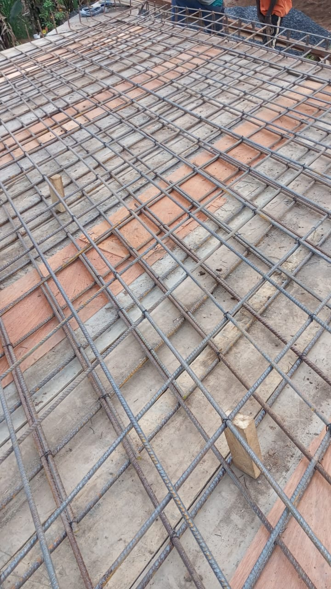
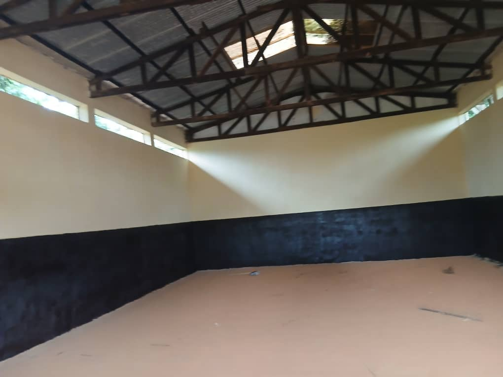
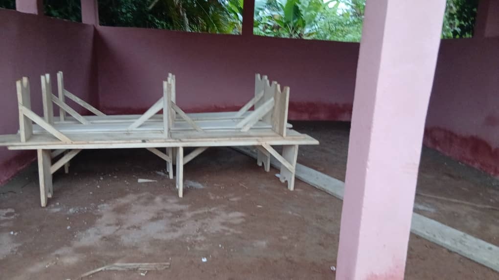
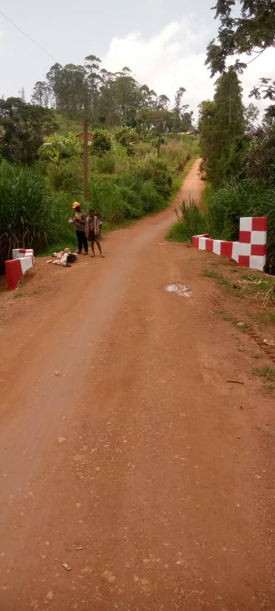

Infrastructure
Travaux du Pont de Nkong
Améliorer l’accès et sécuriser le passage pour les habitants et les activités locales.
Voir le projetChaque projet répond à un besoin concret du village et s’inscrit dans une logique d’impact durable.

Améliorer l’accès et sécuriser le passage pour les habitants et les activités locales.
Voir le projet
Redonner vie à un espace de coopération, de réunion et d’activités utiles à la population.
Voir le projet
Créer un cadre structuré pour les cérémonies, réunions et rassemblements du village.
Voir le projet
Préserver un espace symbolique fort en le dotant d’un aménagement digne et durable.
Voir le projet